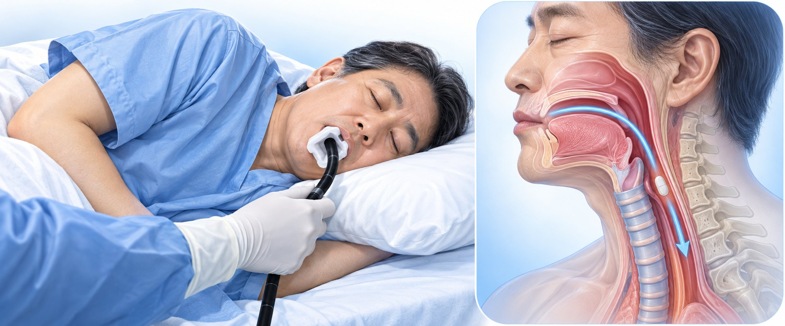
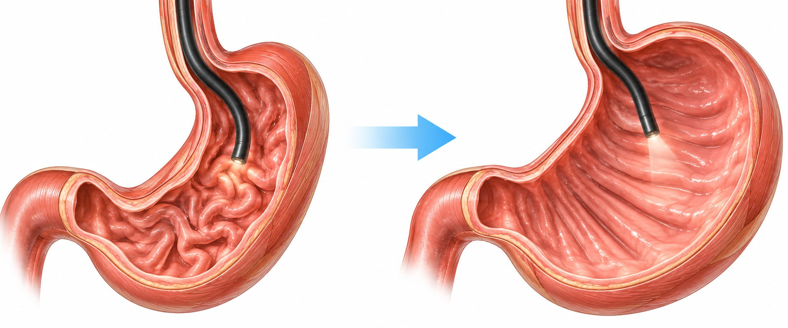

검사 중 네 가지만 기억하세요
검사 중 네 가지만 기억하세요

1관이 넘어갈 때 — 알약처럼 한 번 꿀꺽
2침은 삼키지 말고 입 밖으로 흘리기
3어깨 힘 빼고, 코로 들이쉬고 입으로 내쉬기

펴기 전공기로 편 위 →4참을 수 있는 트림은 참기
 이렇게 하면 왜 덜 힘든가요
이렇게 하면 왜 덜 힘든가요
| 이렇게 하세요 | 이유 |
|---|---|
| ① 한 번 꿀꺽 | “넘어갑니다” 하고 알려 드리면, 알약처럼 한 번만 꿀꺽 하세요. |
| ② 침 흘리기 | 관이 들어가 있는 동안 침을 삼키면 사레들기 쉽습니다. 다 흘리세요. |
| ③ 어깨·얕은 숨 | 어깨에 힘주면 관에 목이 쓸려 검사 뒤 아픕니다. 깊은 숨은 위를 움직입니다. |
| ④ 트림 참기 | 공기로 위를 펴야 보입니다. 트림하면 다시 넣어야 해서, 참으면 빨리 끝납니다. |
검사가 끝난 뒤
| 흔하고 저절로 좋아집니다 | |
|---|---|
|
|
| 숨이 차거나, 피를 토하거나, 가슴·배가 심하게 아프면 → 바로 응급실(119) | |
금식·약은 ‘위내시경 검사 준비 안내문’, 검사 뒤 식사는 ‘위내시경 후 주의사항’을 보세요.